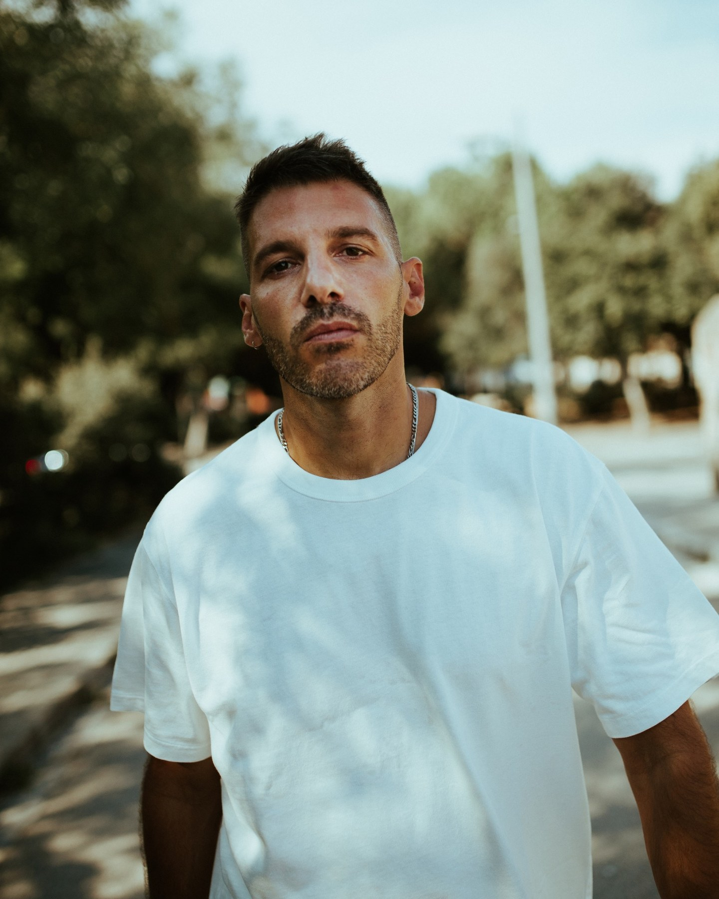

ANDRES
CAMPO

La carrera de ANDRES CAMPO lo ha consolidado como uno de los DJ y productores españoles con mayor proyección internacional. Su trayectoria combina actuaciones en clubes y festivales de referencia con una sólida actividad como productor musical.
Residente de Florida 135 desde 2012, ha llevado su sonido a escenarios internacionales como Tomorrowland, Printworks y RESISTANCE. Como productor, ha publicado música en sellos como Mindshake, Second State, Intec, Mood y RUKUS.
Su identidad musical se mueve entre el groove, los sonidos ácidos y el techno contundente. Cada sesión se construye a partir de la energía de la pista, la exploración musical y la búsqueda de una experiencia diferente.
El 27 de noviembre de 2026, ANDRES CAMPO llega a ANØMALY, en Logroño.